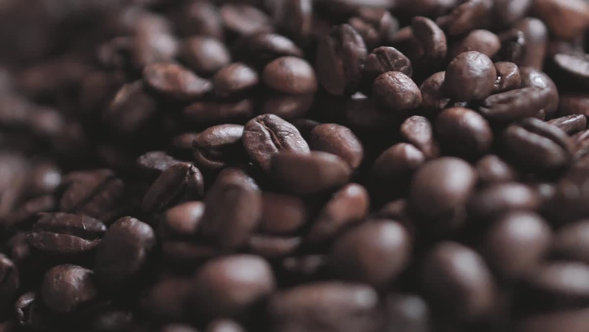

Armá la lista
Marcá en la góndola los insumos que necesita tu máquina o tu cafetería.
Inicio / Insumos
Bonavending provee insumos para las máquinas de café de tu empresa: café Bonafide en grano, leche descremada en polvo, chocolate, té al limón, caldo, mate soluble, azúcar, vasos y paletinas. También insumos de cafetería para empresas gastronómicas.
A3 · Armá tu lista
Usamos productos de primera marca; el café es seleccionado, tostado y envasado especialmente para nuestra empresa. Elegí los insumos y mandanos la lista: te respondemos por WhatsApp con disponibilidad, presentaciones y precios.
0 insumos elegidos
Todavía no elegiste ninguno.
Sin vueltas: por WhatsApp y con la lista que armaste.
Marcá en la góndola los insumos que necesita tu máquina o tu cafetería.
Si sabés qué máquina usan, sumalo: así te decimos qué insumo le va.
Te pasamos precios y disponibilidad, y coordinamos la provisión directa a tu empresa.
Sí: con la modalidad Provisión de insumos te llevamos los productos directamente a tu empresa. Decinos qué máquina usás y qué necesitás.
Sí, también proveemos insumos de cafetería para empresas gastronómicas.
Café Bonafide en grano de la línea Bonaservice. Las presentaciones disponibles hoy te las confirmamos por WhatsApp.
Escribinos con la localidad de tu empresa y te confirmamos.
Sí: colocamos máquinas de café en comodato, en modalidad Fullservice o Autoservice. Ver los servicios.

Escribinos y te pasamos lo que necesita la máquina de tu oficina.
11 5562-3446 Escribinos por WhatsApp